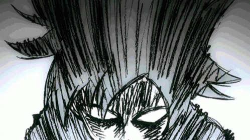
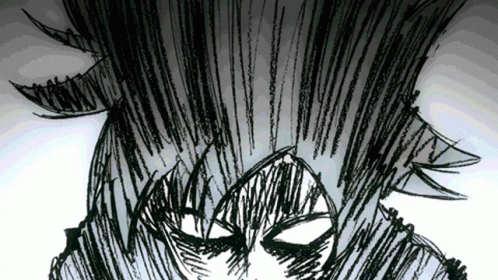
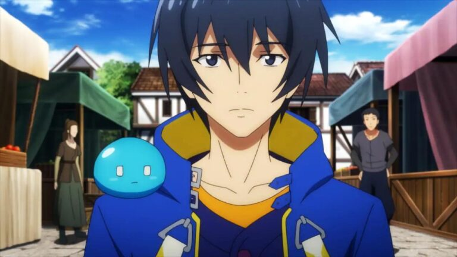
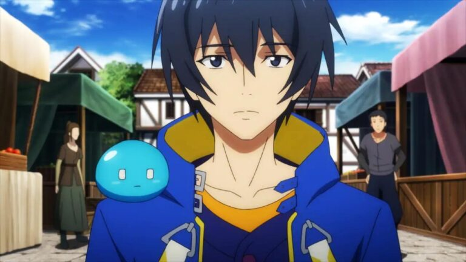
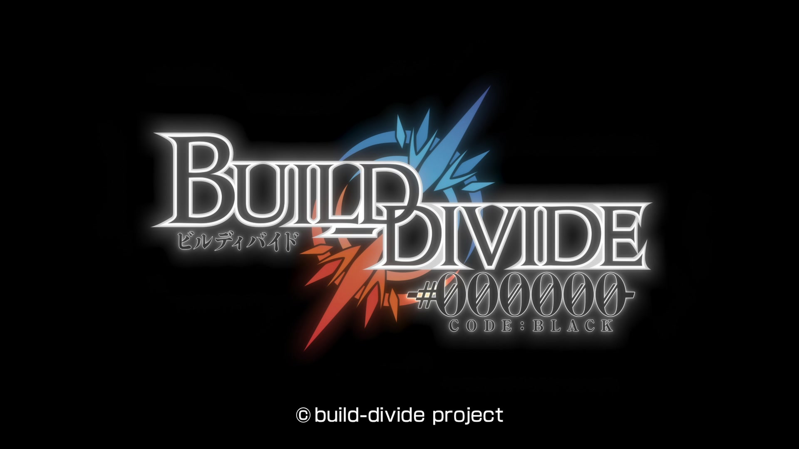
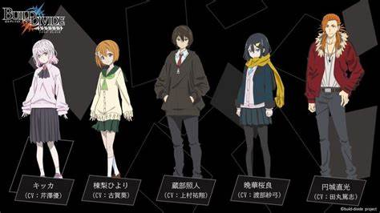
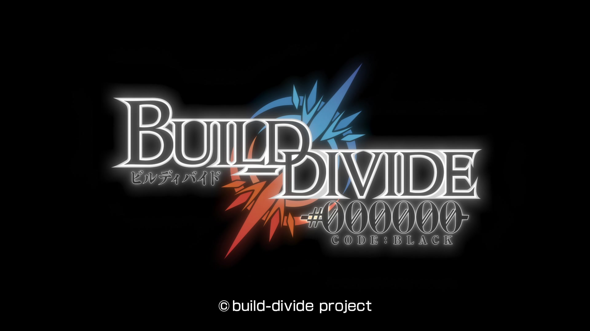
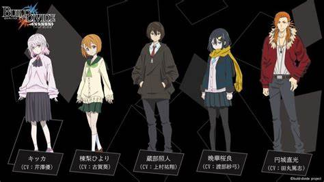
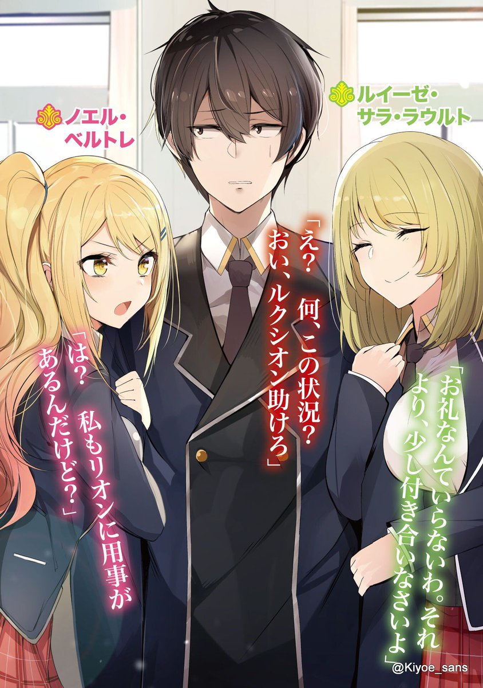
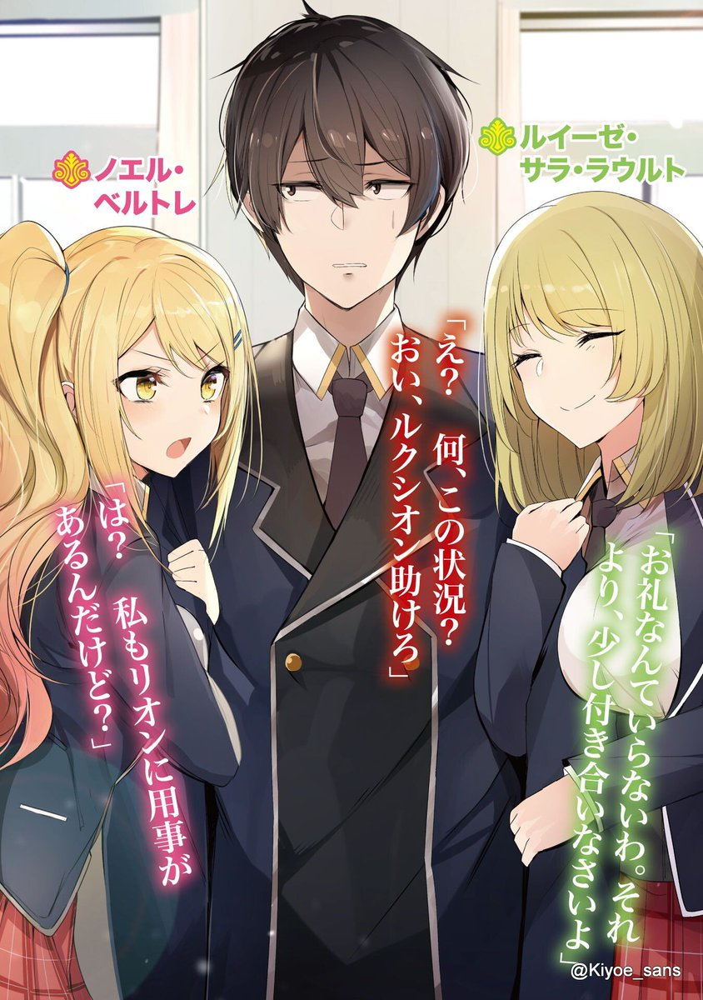

Koi wa Sekai Seifuku no Ato de
"Capitulos"
A los ojos del público, Fudou Aikawa y Desumi Magahara son enemigos jurados que no tienen nada en común. Fudou, también conocido como “Gelato Rojo”, es el líder del escuadrón de héroes “Gelato 5”, cuya misión es lograr la paz mundial. Por otro lado, Desumi es la líder de los súbditos de “Gecko”, una organización de villanos que busca la dominación del mundo. Sin embargo, a pesar de estas diferencias, su relación no es lo que parece. Cuando no están haciendo un espectáculo de estar en la garganta del otro, Desumi y Fudou siguen persiguiendo un amor prohibido. Saliendo en citas, horneando dulces el uno para el otro, y reuniéndose tan a menudo como pueden a pesar de sus agitados horarios, los dos inexpertos tortolitos preparan el camino para su propia y única relación. A pesar de que sus vidas públicas son mundos aparte, Fudou y Desumi no se detendrán ante nada para que su romance aparentemente imposible funcione.


 

 

 





 
